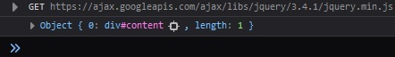
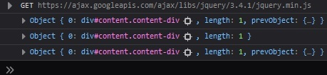
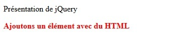
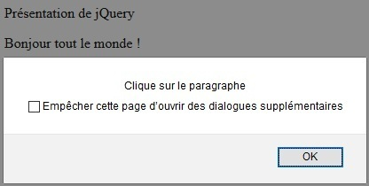
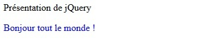

jQuery possède sa propre syntaxe. Là où JavaScript peut être verbeux, jQuery est censé nous simplifier la tâche en proposant une syntaxe plus intuitive et du code facile à écrire.
Une fois un élément du DOM sélectionné, l'objectif est de pouvoir interagir avec lui, lui affecter un comportement ou modifier son aspect.
Pour cela, jQuery propose un ensemble de méthodes.
See the Pen Untitled by OpenSpirit (@OpenSpirit) on CodePen.
Par convention, comme en CSS, un sélecteur par identifiant commencera toujours par "#" et un sélecteur par classe, par "." suivi du nom du sélecteur.
Rappelons-nous que la base de l'interaction entre du code HTML et du code JavaScript est le DOM. jQuery possède son propre modèle de sélecteurs et a choisi d'utiliser les sélecteurs CSS.
De la même manière qu'en CSS, il est également possible de cibler n'importe quelle balise.
En JavaScript pur, pour sélectionner un élément du DOM, nous pouvons utiliser la méthode querySelector.
See the Pen Untitled by OpenSpirit (@OpenSpirit) on CodePen.
Avec jQuery, nous utiliserons les sélecteurs CSS de la manière suivante :
See the Pen Untitled by OpenSpirit (@OpenSpirit) on CodePen.
Si nous l'affichons, nous pouvons constater un objet comportant notre div.
See the Pen Untitled by OpenSpirit (@OpenSpirit) on CodePen.
Une méthode est appelée à la suite du sélecteur : $('selecteur').methode().
Il en existe beaucoup d'autres, toutes ces méthodes sont listées dans la documentation de jQuery.
See the Pen Untitled by OpenSpirit (@OpenSpirit) on CodePen.
Lorsque l'on donne un argument aux méthodes html et text, celles-ci permettent d'initialiser le contenu d'un sélecteur avec l'argument donné en paramètre.
En revanche, si ces méthodes sont appelées sans argument, elles permettent de récupérer le contenu du sélecteur ciblé.
Cette syntaxe sera surtout utile lors de la mise en place d'écouteurs d'événements avec jQuery.
Il est alors possible d'y associer un script exécuté lors du déclenchement de celui-ci.
See the Pen Untitled by OpenSpirit (@OpenSpirit) on CodePen.
Les méthodes peuvent être enchaînées. Ceci nous offre une facilité d'écriture de nos scripts et nous permet d'associer plusieurs comportements à un élément en une seule fois.
See the Pen Untitled by OpenSpirit (@OpenSpirit) on CodePen.
Ici nous écrivons d'abord le texte "Bonjour tout le monde !" dans le paragraphe puis nous lui attribuons la couleur bleue.